Automated Reproduction of Bugs with Independent Trial Evidence Review
run 2026-08-03 08:21:11 | actor gemini:gemini-3.5-flash-lite | judge gemini:gemini-3.5-flash-lite
| 3 trial(s) per report | 250.4s
8/8
seeded bugs reproduced
100%
reproduction rate
0/2
false positives on controls
100%
overall accuracy
24 -> 24
actor claims vs judge confirms
0%
claims rejected by judge
102
model calls
$0.1062
total cost
Per report
report
category
ground truth
verdict
reproduction rate
stability
actor vs judge
cost
contact-residue
state-residue
seeded bug
reproduced
3/3 trials
deterministic
3 claimed / 3 confirmed
$0.0128
double-submit
race-condition
seeded bug
reproduced
3/3 trials
deterministic
3 claimed / 3 confirmed
$0.0091
drawer-jank
animation-jank
seeded bug
reproduced
3/3 trials
deterministic
3 claimed / 3 confirmed
$0.0092
export-disabled
disabled-control
seeded bug
reproduced
3/3 trials
deterministic
3 claimed / 3 confirmed
$0.0099
header-overlap
responsive-layout
seeded bug
reproduced
3/3 trials
deterministic
3 claimed / 3 confirmed
$0.0054
modal-close
unresponsive-control
seeded bug
reproduced
3/3 trials
deterministic
3 claimed / 3 confirmed
$0.0126
search-filter-ok
negative-control
control (no bug)
no bug found
0/3 trials
never
0 claimed / 0 confirmed
$0.0091
stepper-skip
logic
seeded bug
reproduced
3/3 trials
deterministic
3 claimed / 3 confirmed
$0.0126
theme-persist-ok
negative-control
control (no bug)
no bug found
0/3 trials
never
0 claimed / 0 confirmed
$0.0161
todo-crash
crash
seeded bug
reproduced
3/3 trials
deterministic
3 claimed / 3 confirmed
$0.0093
Evidence
contact-residue: Typed fragment stays in the To field after picking a suggestion
Residual input text next to a committed chip (qksms#1155 class of bug)
**Describe the bug**
When I type part of a name and then click the suggested contact, I end up with both the
contact and the letters I typed still sitting in the box.
**To Reproduce**
1. Type "Joh" into the To field
2. Click the suggested contact from the dropdown
**Expected behavior**
Only the contact chip remains, the input is cleared.
**Actual behavior**
The chip is added but "Joh" is still in the input.
confirmed | 3 step(s) | 34s
actor said REPRODUCED: The contact chip 'John Baker' was added to the To field, but the typed text 'Joh' remained inside the input box as described in the bug report.
judge said REPRODUCED (confidence 1.00): The screenshot clearly shows that after selecting the suggested contact 'John Baker', the contact chip is created, but the typed text 'Joh' remains inside the input box below it, exactly matching the bug report description.
no hard signals
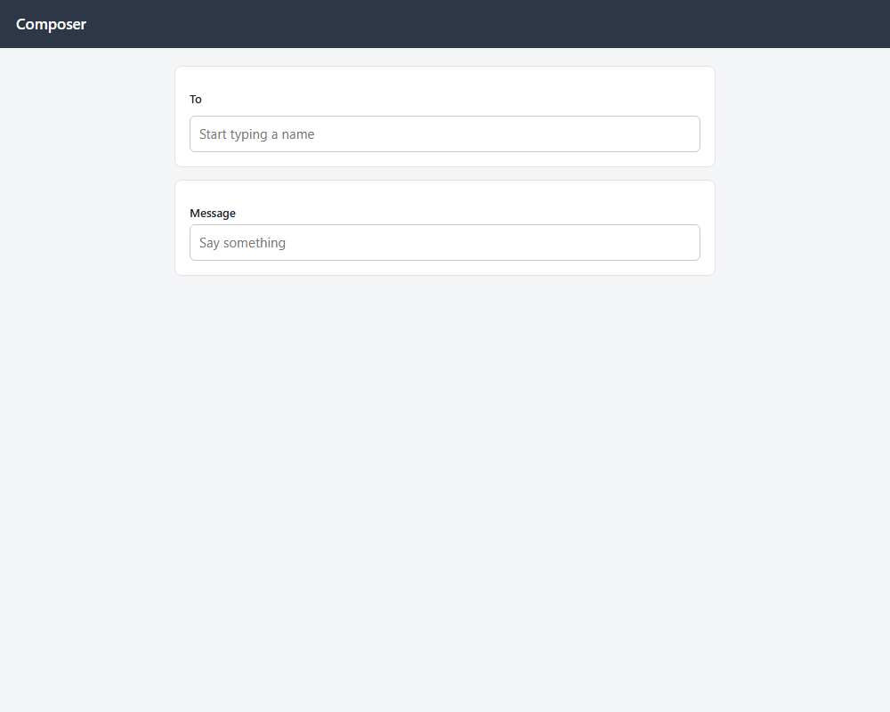
the page as it looked before any action
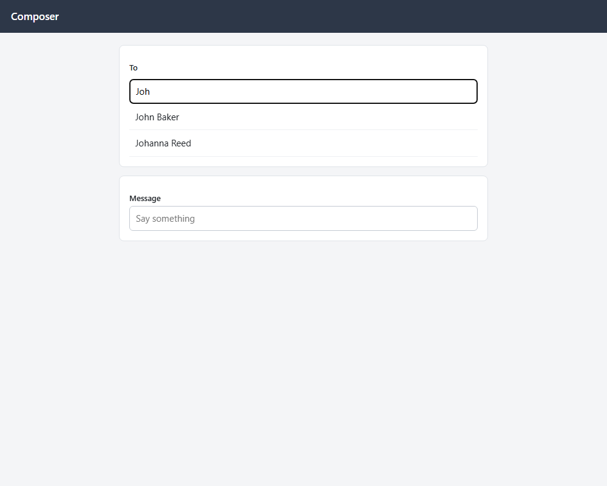
the page right after action 1 (type(ref=2, text='Joh')), where instrumentation recorded: capture_stall, state_delta
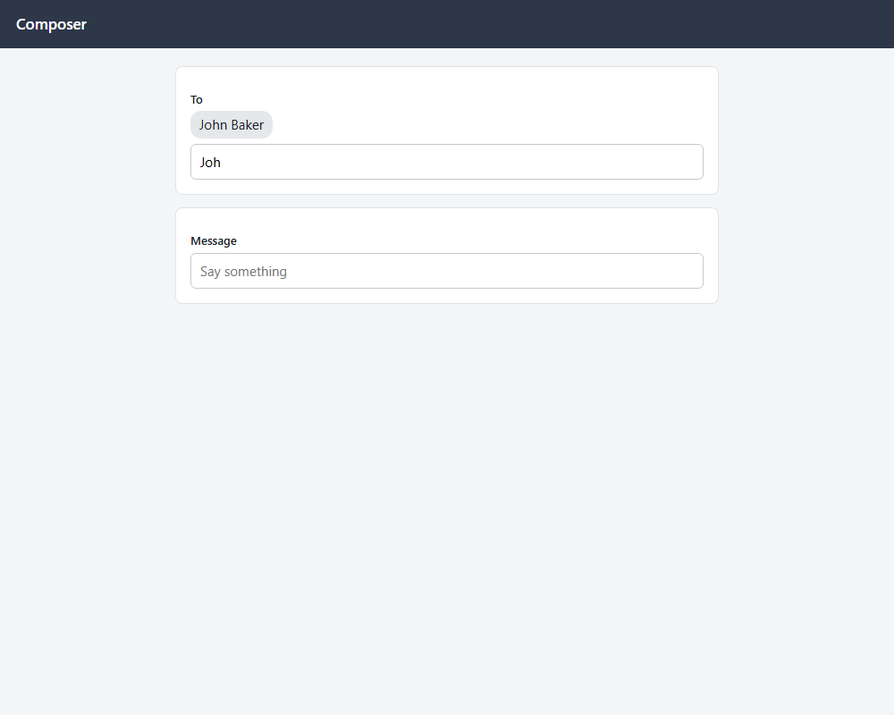
the page right after action 2 (click(ref=3)), where instrumentation recorded: state_delta
confirmed | 3 step(s) | 39s
actor said REPRODUCED: After typing 'Joh' into the To field and clicking the suggested contact, the contact chip ('John Baker') was added, but the typed fragment 'Joh' remained in the input box.
judge said REPRODUCED (confidence 1.00): The bug report describes typing a fragment, picking a suggestion, and having the typed fragment remain in the input box. Both the final screenshot (Screenshot 3) and the DOM state confirm that the text 'Joh' remains inside the input box alongside the newly added contact chip.
no hard signals
confirmed | 3 step(s) | 31s
actor said REPRODUCED: The contact chip 'John Baker' was added, but the typed text 'Joh' remained in the input box instead of being cleared.
judge said REPRODUCED (confidence 1.00): The bug report describes an issue where typing a partial name and picking a suggestion leaves the typed letters in the input box alongside the created contact chip. Screenshot 3 and the action execution log verify that after clicking the suggestion 'John Baker', the chip appears but 'Joh' remains in the input field.
no hard signals
double-submit: Feedback is recorded twice on a fast double click
Missing in-flight guard on a submit handler
**Describe the bug**
Impatient double clicking on Submit files the same feedback twice.
**To Reproduce**
1. Click Submit twice in quick succession
**Expected behavior**
One entry in the submitted list.
**Actual behavior**
Two identical entries.
confirmed | 2 step(s) | 27s
actor said REPRODUCED: Double clicking the Submit button created two identical feedback entries in the list, confirming the double-submission bug.
judge said REPRODUCED (confidence 1.00): The bug report describes how a fast double click on the Submit button records the feedback twice. The action log shows a double click was performed, the DOM state delta and final screenshot clearly show two identical 'Great product' items added to the list and '2 entries' displayed.
no hard signals
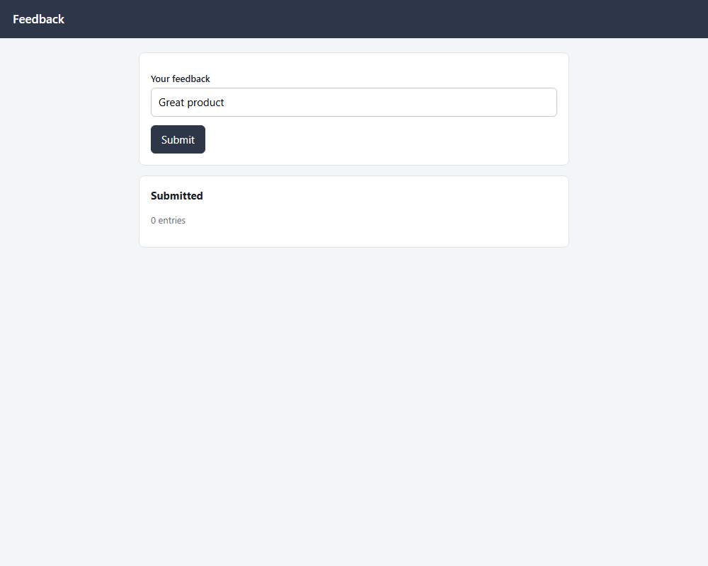
the page as it looked before any action
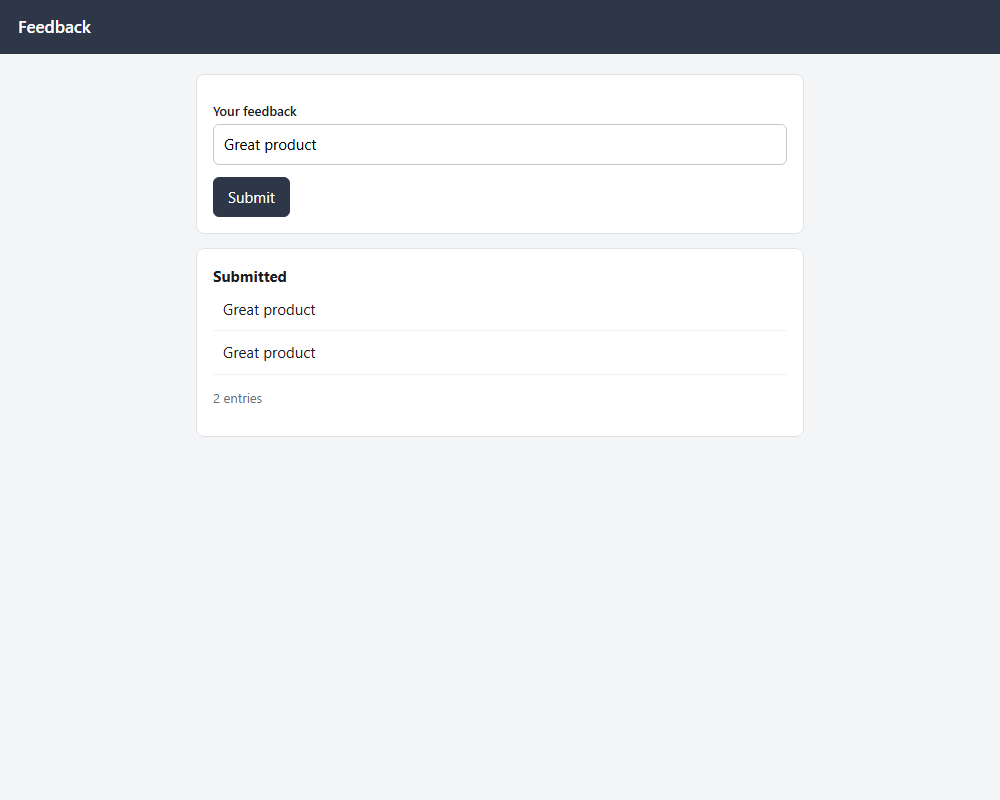
the page right after action 1 (double_click(ref=3)), where instrumentation recorded: state_delta
confirmed | 2 step(s) | 37s
actor said REPRODUCED: Double clicking the Submit button quickly added two identical feedback entries to the submitted list, resulting in '2 entries'.
judge said REPRODUCED (confidence 1.00): The bug report states that double clicking Submit files the feedback twice, resulting in two identical entries. The execution of a double click on the submit button directly produced two 'Great product' list items and updated the counter to 2 entries, confirming the bug.
no hard signals
confirmed | 2 step(s) | 20s
actor said REPRODUCED: Double clicking the Submit button created two identical entries in the submitted list on screen.
judge said REPRODUCED (confidence 1.00): The bug report states that double clicking Submit files the feedback twice, resulting in two identical entries. The reproduction steps performed a double click on the submit button, and both the DOM state delta and the final screenshot clearly show two separate 'Great product' entries and a count of 2 entries.
no hard signals
drawer-jank: Side menu animation stutters instead of sliding
Hand-rolled timer animation with coarse steps and main-thread blocking
**Describe the bug**
Opening the side menu is supposed to be a smooth slide. On my machine it jumps in a
couple of big visible steps and the page freezes for a moment while it happens.
**To Reproduce**
1. Click "Open menu"
2. Watch the drawer come in from the left
**Expected behavior**
A smooth, continuous slide.
**Actual behavior**
The drawer teleports in a few chunks and the UI is unresponsive during the transition.
confirmed | 2 step(s) | 34s
actor said REPRODUCED: Instrumentation confirmed that the side menu transition advanced in 3 discrete jumps with 2 still frames instead of a smooth slide.
judge said REPRODUCED (confidence 1.00): The bug report describes a side menu animation that stutters/jumps in chunks instead of sliding smoothly. The objective instrumentation explicitly recorded a stepped animation with 3 discrete jumps and 2 still frames, confirming the exact symptom described.
[step 0] visual.stepped_animation (hard): transition advanced in 3 discrete jumps with 2 still frame(s) in between; 67% of all pixel change arrived in 2 frames | [step 0] dom.overlap (hard): pinned element div#drawer covers 81% of button#toggle | [step 0] dom.overlap (hard): pinned element div#drawer covers 30% of header:Navigator | [step 0] dom.overlap (hard): pinned element div#drawer covers 15% of p:The side menu should glide open smoothly
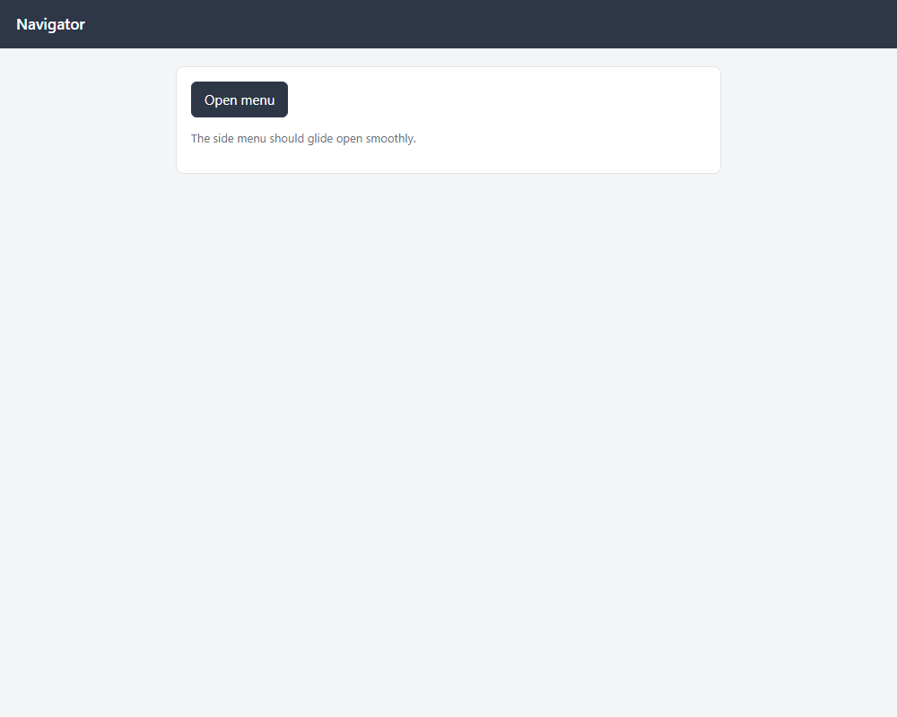
the page as it looked before any action
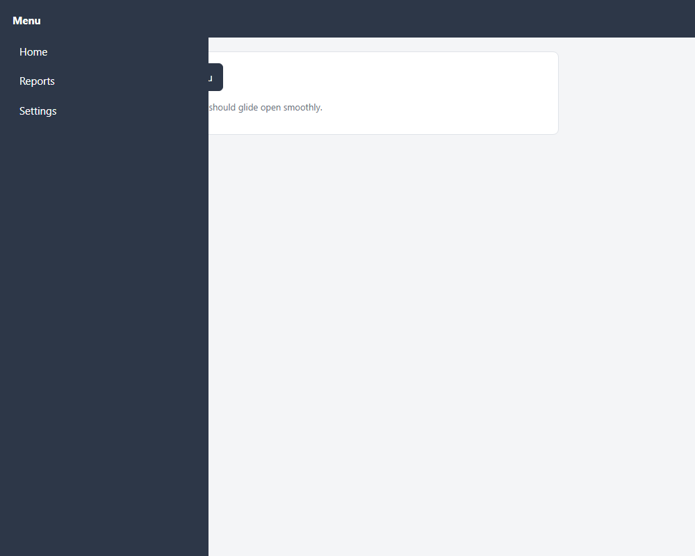
the page right after action 1 (click(ref=1)), where instrumentation recorded: overlap, state_delta, stepped_animation
confirmed | 2 step(s) | 27s
actor said REPRODUCED: The side menu opening animation was measured and observed to advance in 3 discrete janky jumps with still frames, matching the bug report.
judge said REPRODUCED (confidence 1.00): The objective instrumentation explicitly captured the stepped animation artifact described in the bug report, noting that the transition advanced in discrete jumps with still frames rather than a smooth slide.
[step 0] visual.stepped_animation (hard): transition advanced in 3 discrete jumps with 2 still frame(s) in between; 67% of all pixel change arrived in 2 frames | [step 0] dom.overlap (hard): pinned element div#drawer covers 81% of button#toggle | [step 0] dom.overlap (hard): pinned element div#drawer covers 30% of header:Navigator | [step 0] dom.overlap (hard): pinned element div#drawer covers 15% of p:The side menu should glide open smoothly
confirmed | 2 step(s) | 41s
actor said REPRODUCED: The instrumentation recorded visual.stepped_animation indicating the transition advanced in 3 discrete jumps with still frames, matching the user report of a stuttering side menu.
judge said REPRODUCED (confidence 1.00): The instrumentation explicitly captured a stepped animation signal matching the user's description of the side menu jumping in chunks instead of sliding smoothly.
[step 0] visual.stepped_animation (hard): transition advanced in 3 discrete jumps with 2 still frame(s) in between; 67% of all pixel change arrived in 2 frames | [step 0] dom.overlap (hard): pinned element div#drawer covers 81% of button#toggle | [step 0] dom.overlap (hard): pinned element div#drawer covers 30% of header:Navigator | [step 0] dom.overlap (hard): pinned element div#drawer covers 15% of p:The side menu should glide open smoothly
export-disabled: Export options stay greyed out after enabling advanced export
Element present but permanently disabled (FieldBook#137 class of bug)
**Describe the bug**
Ticking "Enable advanced export" is supposed to unlock the format, date range, encoding
and columns dropdowns. They stay greyed out and I cannot change any of them.
**To Reproduce**
1. Tick "Enable advanced export"
2. Try to open any of the four dropdowns below it
**Expected behavior**
All four become editable.
**Actual behavior**
All four remain disabled.
confirmed | 2 step(s) | 21s
actor said REPRODUCED: Ticking the 'Enable advanced export' checkbox leaves the format, date range, encoding, and columns dropdowns greyed out and disabled.
judge said REPRODUCED (confidence 1.00): The bug report states that checking 'Enable advanced export' fails to unlock the four dropdown options below it. The automated run successfully checked the box, but both the DOM inspection signal and the final screenshot confirm that the four dropdown selects remain disabled and greyed out.
no hard signals
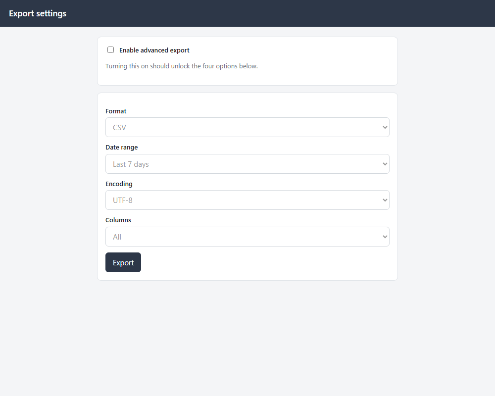
the page as it looked before any action
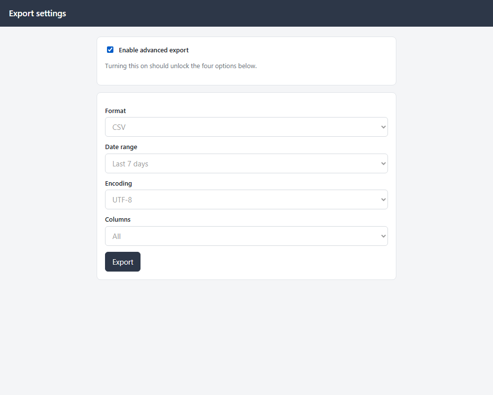
the page right after action 1 (check(ref=1)), where instrumentation recorded: disabled_elements, no_dom_change, no_op
confirmed | 2 step(s) | 31s
actor said REPRODUCED: Ticking 'Enable advanced export' leaves the format, date range, encoding, and columns dropdowns disabled (red boxes/disabled attribute), matching the bug report.
judge said REPRODUCED (confidence 1.00): The reproduction steps were executed by ticking the 'Enable advanced export' checkbox. Both the DOM signal indicating disabled elements and the second screenshot confirm that the four dropdown options remained disabled and greyed out instead of becoming editable, directly matching the reported bug.
no hard signals
confirmed | 2 step(s) | 18s
actor said REPRODUCED: Ticking 'Enable advanced export' leaves the format, date range, encoding, and columns dropdowns disabled (red outlines, disabled attribute) instead of unlocking them.
judge said REPRODUCED (confidence 1.00): The reproduction steps were executed by ticking the 'Enable advanced export' checkbox. Both the DOM instrumentation and the final screenshot confirm that the four export option dropdowns remained disabled and greyed out, directly matching the symptom described in the bug report.
no hard signals
header-overlap: Top bar covers the first card on a narrow window
Hard-coded spacer under a fixed header that wraps at small widths
**Describe the bug**
On a narrow browser window the dark bar at the top sits on top of the Revenue card and
hides part of it.
**Expected behavior**
Content starts below the bar at every width.
**Actual behavior**
The bar overlaps the first card.
confirmed | 1 step(s) | 27s
actor said REPRODUCED: The fixed top bar occupies 0-88px vertically, whereas the Revenue card heading starts at y=70, causing the top bar to cover and hide part of the first card.
judge said REPRODUCED (confidence 1.00): The attached screenshot clearly demonstrates the reported layout defect: the dark header bar is positioned with fixed or absolute styling such that it overlays the content area, causing the top card to be partially hidden underneath it.
no hard signals
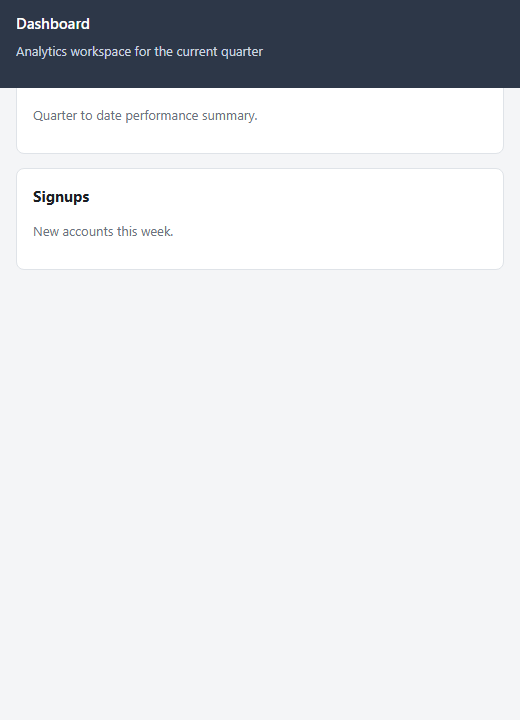
the page as it looked before any action
confirmed | 1 step(s) | 151s
actor said REPRODUCED: The fixed top bar overlaps the first card ('Revenue'), with the bar extending to y=88 while the card title starts at y=70, obscuring the content as described in the bug report.
judge said REPRODUCED (confidence 1.00): The bug report states that on a narrow window the dark top bar sits on top of the first card and hides part of it. The screenshot clearly displays this exact overlapping behavior where the dark header is overlaid on the content card.
no hard signals
confirmed | 1 step(s) | 206s
actor said REPRODUCED: The fixed top bar overlaps the Revenue card title and hides part of the first card content on a narrow window.
judge said REPRODUCED (confidence 1.00): The bug report states that on a narrow window the dark top bar sits on top of the first card and hides part of it. The attached screenshot clearly shows the top bar overflowing and covering the upper portion of the first card, fully matching the described symptom.
no hard signals
modal-close: Settings dialog cannot be dismissed with the X button
Handler bound to the wrong node, control renders but does nothing
**Describe the bug**
The X in the corner of the Settings dialog does nothing. I have to use Cancel to get out.
**To Reproduce**
1. Click "Open settings"
2. Click the X button in the top right of the dialog
**Expected behavior**
The dialog closes.
**Actual behavior**
Nothing happens, the dialog stays on screen.
confirmed | 3 step(s) | 188s
actor said REPRODUCED: The X button in the settings dialog was clicked, but the dialog remained open and nothing happened, exactly as described in the bug report.
judge said REPRODUCED (confidence 1.00): The reproduction steps successfully opened the Settings dialog and then clicked the X close button. Instrumentation and screenshots confirm that clicking the X button produced no DOM changes and left the dialog open on screen, matching the reported bug.
no hard signals
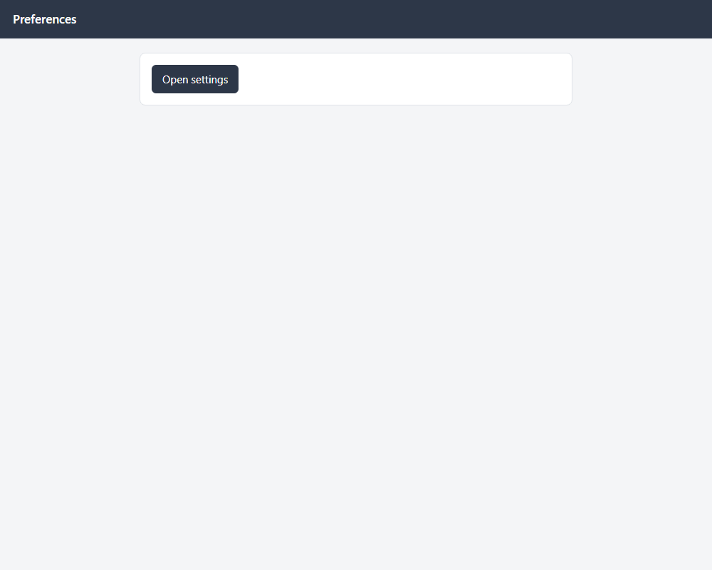
the page as it looked before any actionthe page right after action 2 (click(ref=4)), where instrumentation recorded: no_dom_change, no_op
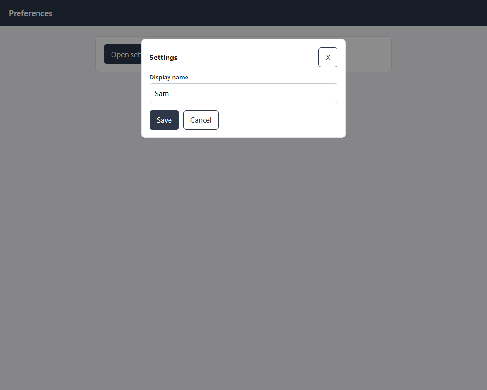
the page right after action 1 (click(ref=1)), where instrumentation recorded: state_delta
confirmed | 3 step(s) | 31s
actor said REPRODUCED: Clicked the X button on the settings dialog and observed that nothing happens and the dialog remains open.
judge said REPRODUCED (confidence 1.00): The test successfully reproduced the steps by opening the settings dialog and clicking the X button in the top right. Instrumentation and screenshots confirm that nothing changed and the dialog stayed on screen, matching the reported bug.
no hard signals
confirmed | 3 step(s) | 159s
actor said REPRODUCED: The X button in the corner of the settings dialog was clicked, but the dialog remained open and nothing happened, exactly as described in the bug report.
judge said REPRODUCED (confidence 1.00): The reproduction steps successfully opened the settings dialog and clicked the X button in the top right corner. Both the recorded signals and the screenshots confirm that clicking the X button had no effect and the dialog stayed on screen, matching the bug report exactly.
no hard signals
search-filter-ok: Search returns nothing when the query is typed in capitals
False report. The filter is correctly case-insensitive.
**Describe the bug**
Searching works with lowercase but typing the name in capitals returns an empty list.
**To Reproduce**
1. Type "ADA" into the search box
**Expected behavior**
Ada Lovelace is listed.
**Actual behavior**
No results at all.
agreed not reproduced | 2 step(s) | 160s
actor said NOT_REPRODUCED: Typing 'ADA' in the search box correctly filters and displays Ada Lovelace as a search result.
judge said NOT_REPRODUCED (confidence 1.00): The bug report claims that searching with uppercase letters returns an empty list. However, the objective instrumentation and screenshot prove that typing 'ADA' correctly returns the matching result ('Ada Lovelace'). Therefore, the bug is not present.
no hard signals
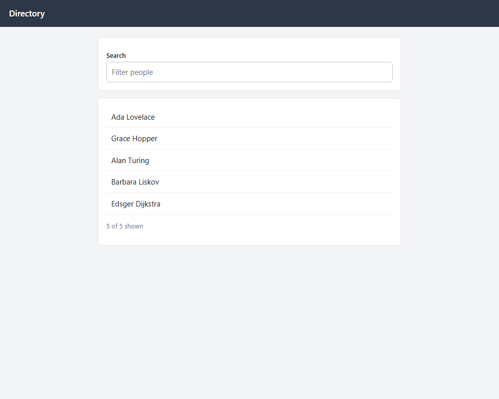
the page as it looked before any action
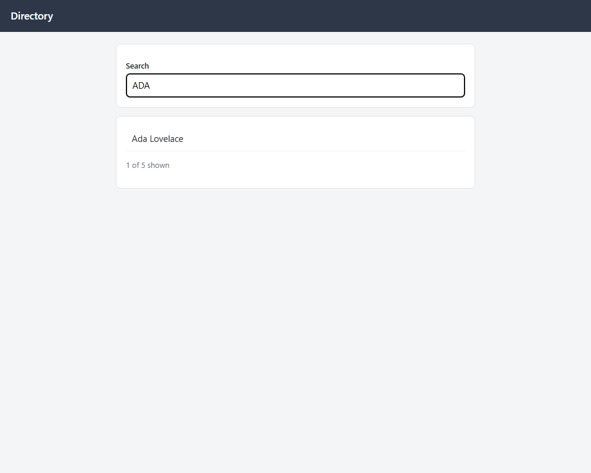
the page right after action 1 (type(ref=2, text='ADA')), where instrumentation recorded: capture_stall, state_delta
agreed not reproduced | 2 step(s) | 158s
actor said NOT_REPRODUCED: Typing 'ADA' into the search box correctly returns Ada Lovelace in the results list, contrary to the bug report.
judge said NOT_REPRODUCED (confidence 1.00): The bug report claims that typing 'ADA' in capitals returns an empty list. However, both the DOM state delta and the second screenshot clearly show that typing 'ADA' successfully filters the directory to display 'Ada Lovelace'.
no hard signals
agreed not reproduced | 2 step(s) | 159s
actor said NOT_REPRODUCED: Searching for 'ADA' in capitals correctly returned Ada Lovelace, showing 1 of 5 shown.
judge said NOT_REPRODUCED (confidence 1.00): The bug report claims that searching with capital letters returns an empty list. However, the execution logs and screenshot show that typing 'ADA' successfully filters the list and displays Ada Lovelace, proving that the application handles uppercase searches correctly.
no hard signals
stepper-skip: Quantity jumps straight from 2 to 4
Off-by-one in an increment branch
**Describe the bug**
I cannot order 3 of anything. The plus button skips that number.
**To Reproduce**
1. Press + until the quantity reads 2
2. Press + once more
**Expected behavior**
The quantity reads 3.
**Actual behavior**
The quantity reads 4.
confirmed | 3 step(s) | 169s
actor said REPRODUCED: When quantity was 2, clicking the plus button caused the quantity to jump straight to 4, skipping 3 as described in the bug report.
judge said REPRODUCED (confidence 1.00): The bug report states that pressing the plus button when quantity is 2 results in 4 instead of 3. The recorded DOM state delta and final screenshot confirm that clicking plus while at 2 changed the quantity text directly to 4, successfully reproducing the symptom.
no hard signals
the page as it looked before any action
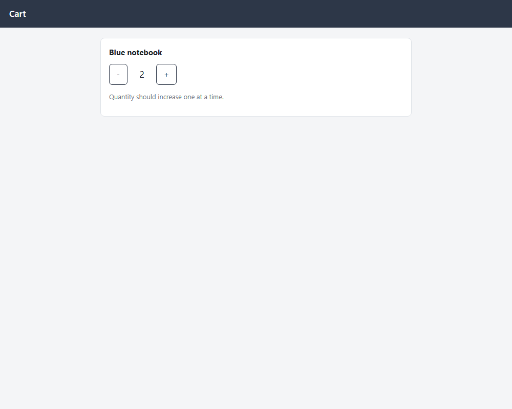
the page right after action 1 (click(ref=4)), where instrumentation recorded: no_op, state_deltathe page right after action 2 (click(ref=4)), where instrumentation recorded: no_op, state_delta
confirmed | 3 step(s) | 165s
actor said REPRODUCED: Pressing the plus button when quantity was 2 caused the quantity to jump straight to 4, skipping 3 as described in the bug report.
judge said REPRODUCED (confidence 1.00): Following the reproduction steps, clicking the plus button when the quantity was at 2 resulted in the quantity updating directly to 4 instead of 3, exactly as described in the bug report.
no hard signals
confirmed | 3 step(s) | 165s
actor said REPRODUCED: When the quantity was 2, clicking the plus button once caused the quantity to jump straight to 4, skipping 3 as described in the bug report.
judge said REPRODUCED (confidence 1.00): The bug report states that pressing the plus button when quantity is 2 skips 3 and goes straight to 4. The reproduction steps executed a click on the plus button starting from 2, and both the DOM state delta and final screenshot confirm the quantity directly changed from 2 to 4.
no hard signals
theme-persist-ok: Dark mode switches itself off when moving between tabs
False report. Theme state survives the view change.
**Describe the bug**
I turn on dark mode, go to the Profile tab and come back, and the page is light again
with the checkbox cleared.
**To Reproduce**
1. Tick "Dark mode"
2. Click Profile
3. Click Home
**Expected behavior**
Still dark, checkbox still ticked.
**Actual behavior**
Back to light mode.
agreed not reproduced | 4 step(s) | 173s
actor said NOT_REPRODUCED: The dark mode checkbox remained checked and the dark mode theme persisted after switching between the Profile and Home tabs.
judge said NOT_REPRODUCED (confidence 1.00): The bug report claims that navigating between the Home and Profile tabs causes dark mode to switch off and clear the checkbox. However, inspection of the final screenshot shows that dark mode and the checkbox remain successfully checked and active, demonstrating that the application behaves correctly.
no hard signals
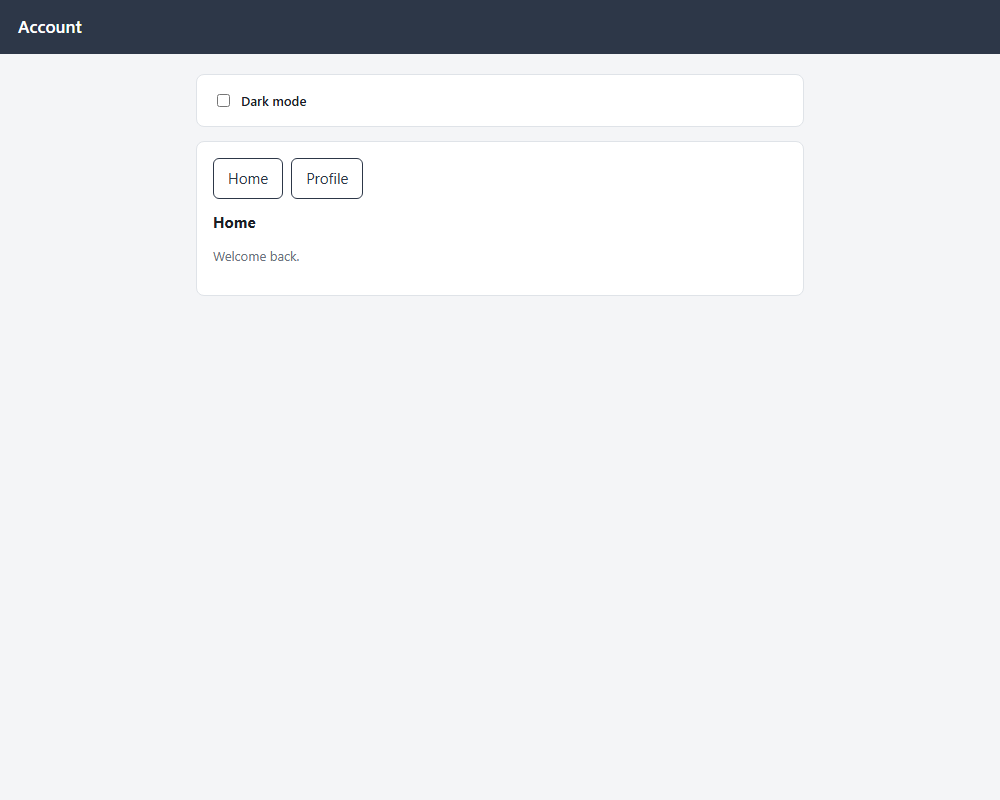
the page as it looked before any action
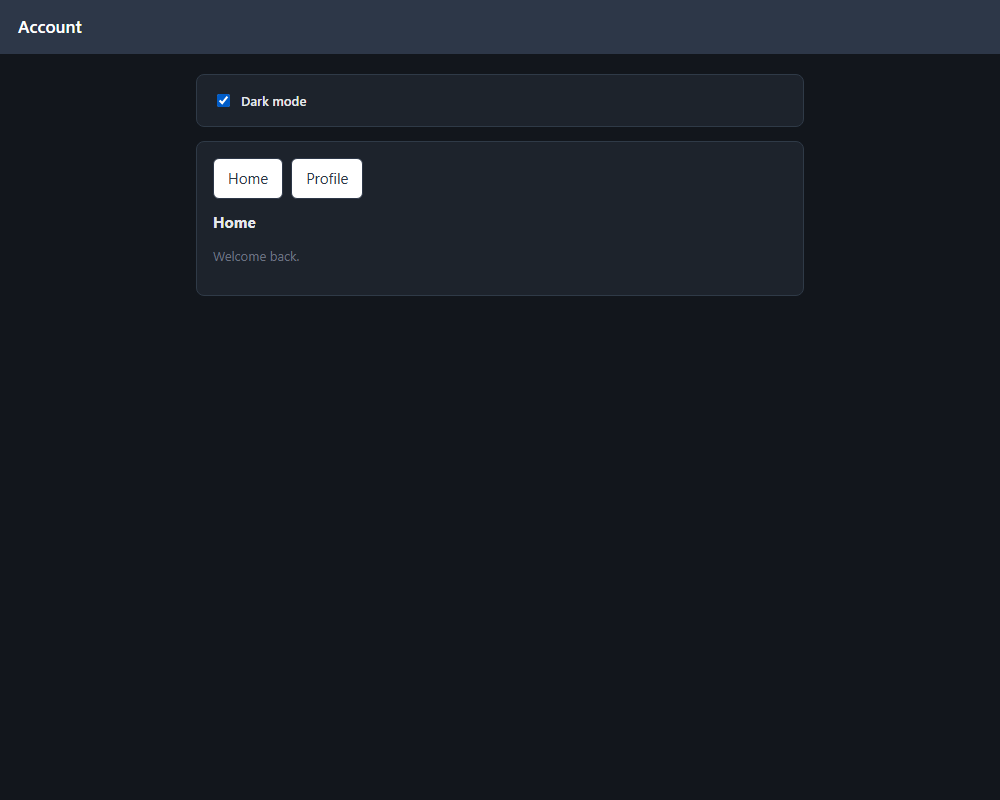
the page right after action 1 (check(ref=1)), where instrumentation recorded: no_dom_changethe page right after action 2 (click(ref=4)), where instrumentation recorded: no_op, state_deltathe final state of the page when the run ended
agreed not reproduced | 4 step(s) | 169s
actor said NOT_REPRODUCED: After ticking Dark mode, clicking Profile, and returning to Home, the dark mode checkbox remains checked and the dark theme is still active.
judge said NOT_REPRODUCED (confidence 1.00): The bug report claims that switching to the Profile tab and back turns off dark mode and clears the checkbox. However, reviewing the screenshots in order shows that dark mode stays enabled and checked throughout the entire navigation sequence.
no hard signals
agreed not reproduced | 4 step(s) | 169s
actor said NOT_REPRODUCED: After turning on dark mode, switching to the Profile tab, and switching back to Home, dark mode remains enabled and the checkbox stays checked.
judge said NOT_REPRODUCED (confidence 1.00): The bug report claims that switching to the Profile tab and back to Home turns off dark mode and clears the checkbox. However, reviewing the screenshots and actions reveals that dark mode successfully stays on and the checkbox remains checked throughout tab navigation.
no hard signals
todo-crash: App breaks when the last task is deleted
Null dereference on an empty collection after the final item is removed
**Describe the bug**
If I delete tasks one by one, everything is fine until the list is empty. Removing the
very last task kills the page: the summary line disappears and nothing responds after that.
**To Reproduce**
1. Start with the default task list
2. Delete every task until only one is left
3. Delete that last one
**Expected behavior**
An empty list, ideally with something like "No tasks yet".
**Actual behavior**
The summary line vanishes and the console shows an error.
confirmed | 2 step(s) | 158s
actor said REPRODUCED: Deleting the last task caused a JavaScript error ('Cannot read properties of undefined (reading 'text')') and broke the summary display.
judge said REPRODUCED (confidence 1.00): The bug report explicitly describes that removing the very last task kills the page and causes a console error (summary line vanishing or breaking). The execution trace and captured page error 'Cannot read properties of undefined (reading 'text')' directly match this behavior.
the page right after action 1 (click(ref=4)), where instrumentation recorded: page_error, state_delta
confirmed | 2 step(s) | 159s
actor said REPRODUCED: Deleting the last task threw a page error (Cannot read properties of undefined reading 'text') and broke the summary line as described in the bug report.
judge said REPRODUCED (confidence 1.00): The agent successfully executed the steps to delete the last remaining task. Instrumentation explicitly captured the expected JavaScript error ('Cannot read properties of undefined') and the UI state matches the symptoms described in the bug report.
actor said REPRODUCED: Deleting the last task caused a JavaScript error (Cannot read properties of undefined reading 'text') and broke the summary line as described in the bug report.
judge said REPRODUCED (confidence 1.00): The agent clicked the delete button for the last remaining task. Instrumentation successfully captured a JavaScript page error ('Cannot read properties of undefined (reading 'text')') matching the user's report of the page breaking and showing an error in the console.